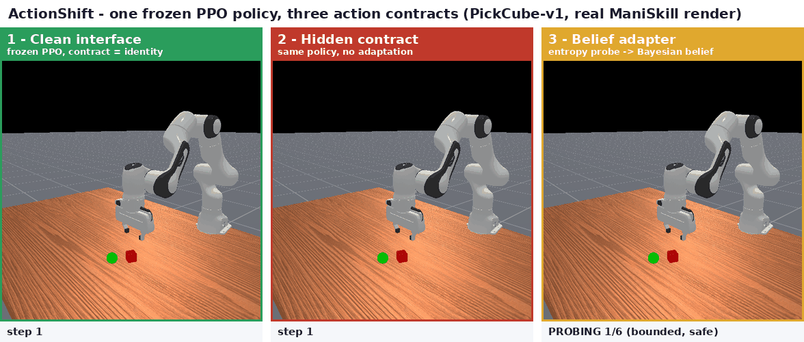
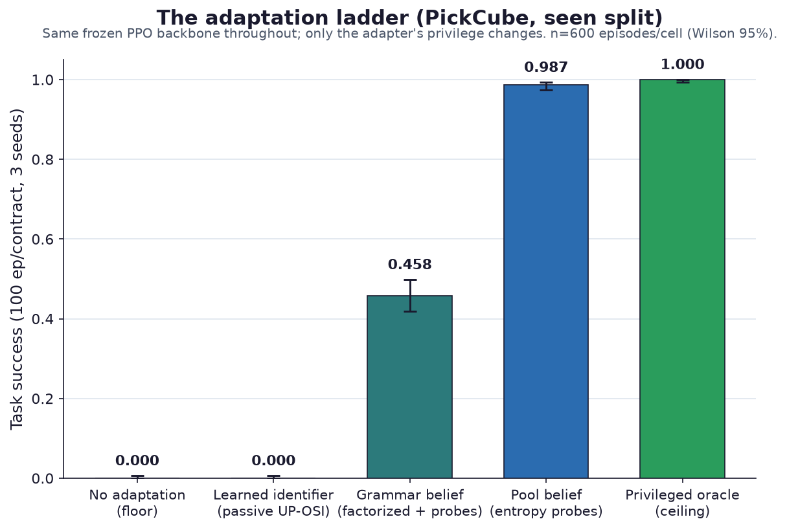
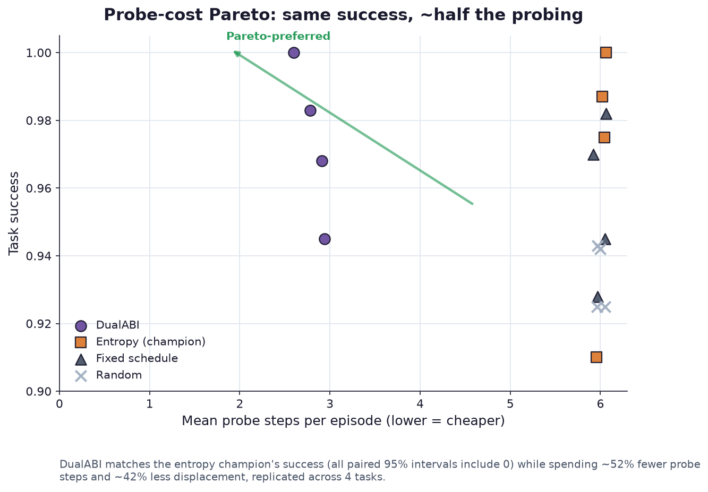
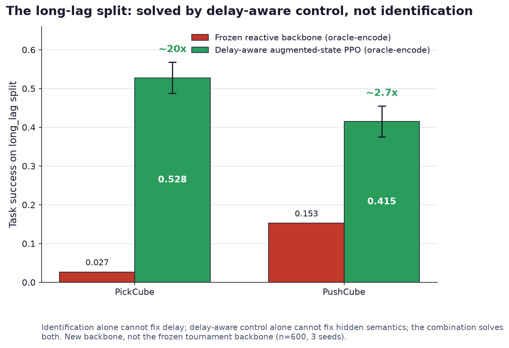
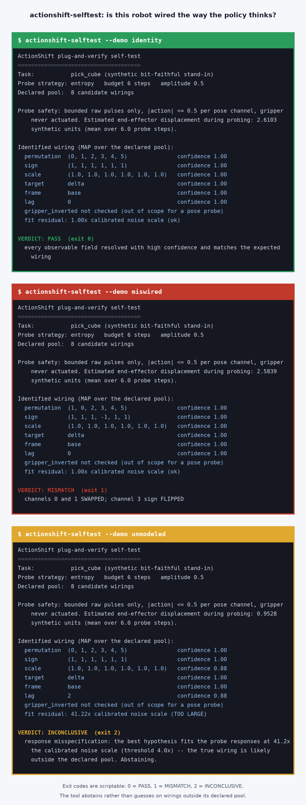

What happens when a robot policy's action numbers silently change meaning?
ActionShift freezes disjoint generalization splits over real ManiSkill tasks and re-maps what a policy's outputs mean — permutation, sign, scale, target, frame, lag, gripper — without telling the agent. The benchmark measures adaptation: 6 bounded probe steps, then success or failure. Task dynamics stay fixed, so every drop is attributable to the interface alone.
pip install actionshift # 1.1.0 · Python 3.11+ · ManiSkill 3 tasks
One half of a pair
ActionShift is the online adaptation half of the hidden action-interface attack. Its sibling, ActionABI, is the offline forensic half: it recovers the same contract from logged trajectories and abstains when the evidence is thin. Both speak one contract grammar, and the coupling is real code — ActionABI's C++ evidence scorer runs live inside ActionShift's belief loop via pybind11, with verified numerical parity.
Evidence
| PickCube adaptation ladder | No adaptation 0.000 → pool-belief (entropy probes) 0.987, privileged oracle 1.000 — same frozen PPO backbone, Wilson 95% intervals |
|---|---|
| Probe efficiency | DualABI reaches matched success with 52% fewer probe steps than the baselines |
| Contract identified in | 6 bounded, safe probe steps — no retraining, never told the active contract |
| Full suite | 320 tests incl. the simulator-free actionshift-selftest plug-and-verify run |
| Frozen splits | Hash-addressed seen/unseen contracts over PickCube, PushCube, PullCube, StackCube on ManiSkill 3 |
| Open artifacts | Dataset + baseline checkpoints on HuggingFace · DOI 10.5281/zenodo.21500713 |
Media




Install & verify
pip install -e '.[dev]' # Python 3.11, see README for ManiSkill extras actionshift-selftest # simulator-free plug-and-verify run
Limits
What this release does not claim (from the claim boundary):
- The safety mask is a software constraint check, not a hardware safety certificate.
- Matched-privilege comparisons measure the value of information-seeking, not unprivileged adaptation.
- No broad-novelty or method-superiority-over-SOTA claim — the graded ledger and red-team audit are in the README.
Family
| Sibling | ActionABI — offline forensic recovery over the same contract grammar (repo: Archerkattri/actionabi) |
|---|---|
| Simulator | ManiSkill 3 (PickCube, PushCube, PullCube, StackCube) |
| More | Research portfolio · code · PyPI |
| External | ManiSkill docs |